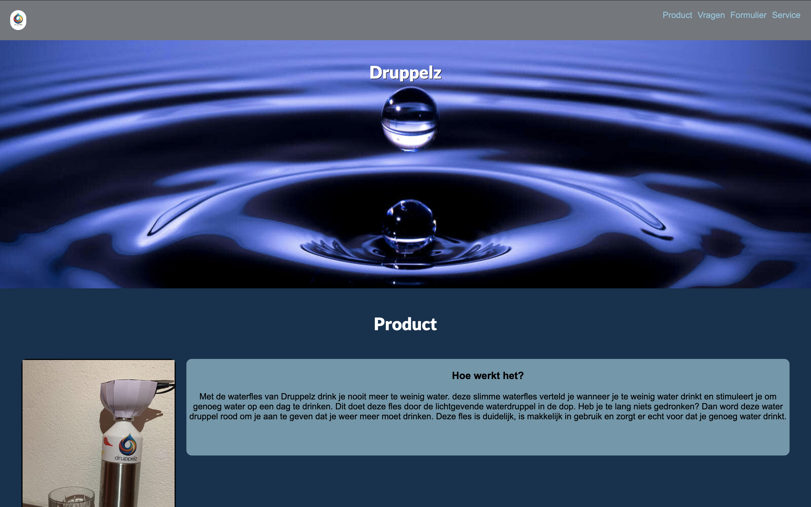
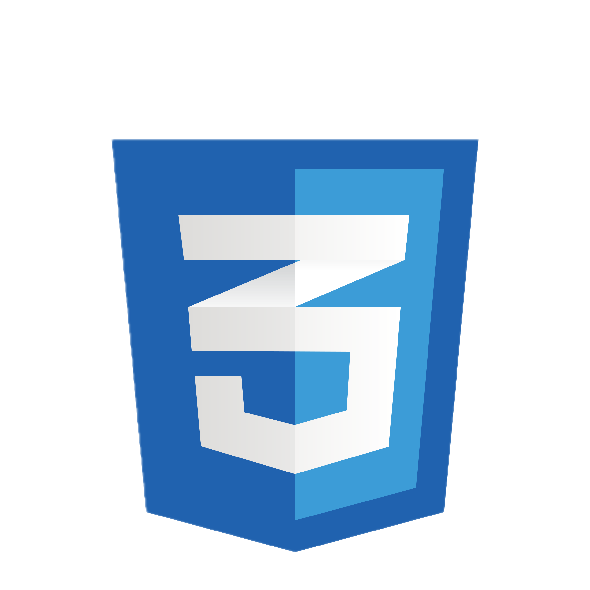

Projecten

Druppelz
In mijn tweede maand als CMGT-student, met slechts twee maanden programmeerervaring, heb ik een promotiewebsite gebouwd met HTML en CSS voor de eindmarkt van ons groepsproject.
 HTML
HTML -  CSS

Player cards
Voor mijn eerste front-end eindopdracht tijdens mijn studie heb ik een website in HTML en CSS nagebouwd op basis van wireframes die door de docenten werden aangeleverd.
- HTML
- CSS
Portfolio Website
Een moderne portfolio met HTML, CSS en JavaScript.
https://crazyclownytr.github.io/my-new-game/ Meer info